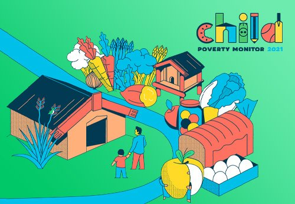

In this project I clean UK property market Price Paid data in SQL Server. All the codes in my Github profile. HM LAND REGISTRY UK PROPERTY MARKET the sales patterns of UK Price Paid Dataset of 2018, 2019, 2020 years. properties sold for full market value in England and Wales. Dataset includes extensive range of sales to multi-million-pound mansions.

The study includes information on road traffic accidents that occurred in Great Britain during the previous five years as recorded by the police using the STATS19 reporting system. For codes use Github profile.
The analysis of goal 3(Ensure healthy lives and promote well-being for all at all ages) and goal 4(4 Ensure inclusive and equitable quality education and promote lifelong learning opportunities for all) of the sustainable development comprising 17 sustainable development goals of the 2030 SAARC SDG Evaluator. Codes in Github.

As per the countries choose (India and Peru), there are few differences in the dataset of each country. Each dataset mainly focuses of two areas. Childs characteristics and Household characteristics. All codes can get from Github
Use Prediction Telco Customer Churn using Classification model for Clustering part. Use Patients with heart disease are categorized based on their characteristics using K-means Clustering and Association rule mining was used to analyze customer behavior in grocery products. These all codes created using R Studio.